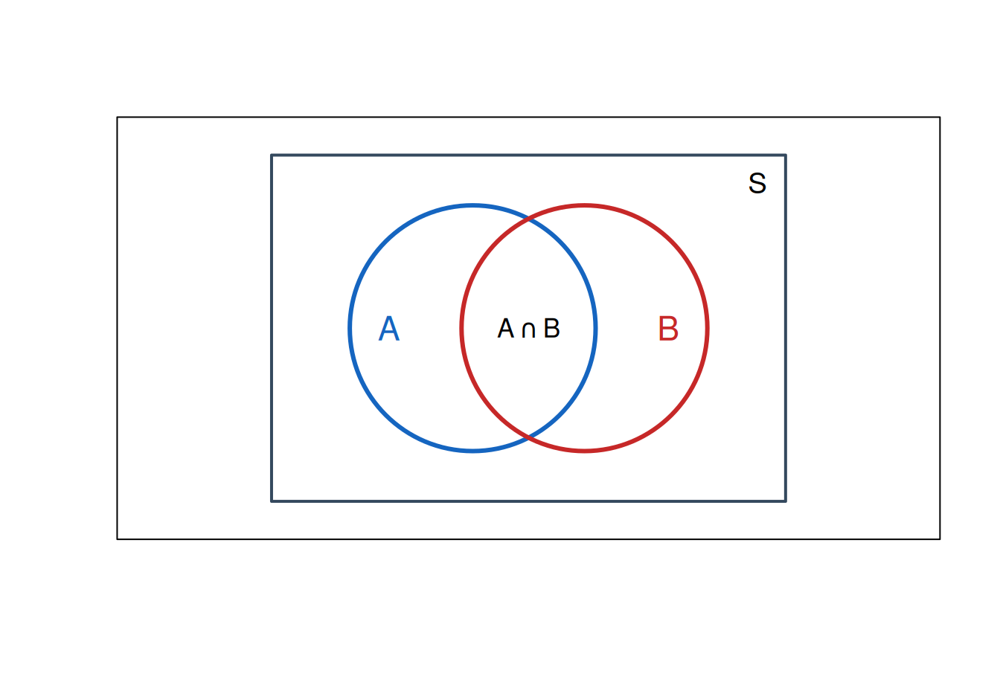

S <- 1:6
A <- c(2, 4, 6)
B <- c(4, 5, 6)
union(A, B)[1] 2 4 6 5intersect(A, B)[1] 4 6setdiff(S, A) # complemento de A respecto de S[1] 1 3 5setdiff(A, B) # A menos B[1] 2Al finalizar este capítulo, el estudiante será capaz de:
Un experimento aleatorio se convierte en un modelo matemático cuando especificamos con claridad:
Esta precisión es esencial. Si lanzamos un dado, podemos registrar el número de puntos, la paridad o simplemente si el resultado supera a 4. El experimento físico es el mismo, pero el espacio muestral cambia con la observación que decidimos conservar.
Un conjunto es una colección bien definida de objetos. Los objetos que lo integran son sus elementos.
Si \(x\) pertenece a \(A\), escribimos \(x\in A\); si no pertenece, \(x\notin A\). Un conjunto puede describirse por extensión,
\[ A=\{2,4,6\}, \]
o mediante una propiedad,
\[ A=\{x\in\mathbb{N}:1\leq x\leq 6\text{ y }x\text{ es par}\}. \]
Decimos que \(A\) es subconjunto de \(B\), y escribimos \(A\subseteq B\), cuando todo elemento de \(A\) también pertenece a \(B\).
Dos conjuntos son iguales si contienen exactamente los mismos elementos:
\[ A=B \quad\Longleftrightarrow\quad A\subseteq B\text{ y }B\subseteq A. \]
El conjunto sin elementos se llama conjunto vacío y se representa por \(\varnothing\).
Sean \(A\) y \(B\) subconjuntos de un universo \(S\).
| Operación | Notación | Interpretación |
|---|---|---|
| Unión | \(A\cup B\) | elementos que están en \(A\), en \(B\) o en ambos |
| Intersección | \(A\cap B\) | elementos comunes a \(A\) y \(B\) |
| Diferencia | \(A\setminus B\) | elementos de \(A\) que no están en \(B\) |
| Complemento | \(A^c\) | elementos de \(S\) que no están en \(A\) |
| Diferencia simétrica | \(A\triangle B\) | elementos que están en exactamente uno de los dos conjuntos |
La palabra o se interpreta de manera inclusiva: \(A\cup B\) contiene también los resultados donde ocurren ambos eventos. Si queremos “uno u otro, pero no ambos”, utilizamos \(A\triangle B\).
Dos identidades especialmente útiles son
\[ (A\cup B)^c=A^c\cap B^c, \]
\[ (A\cap B)^c=A^c\cup B^c. \]
En lenguaje cotidiano:
El espacio muestral, denotado por \(S\) o \(\Omega\), es el conjunto de todos los resultados posibles del experimento, de acuerdo con lo que se decidió observar. Cada elemento de \(S\) es un punto muestral.
Si registramos el número de puntos,
\[ S_1=\{1,2,3,4,5,6\}. \]
Si sólo registramos la paridad,
\[ S_2=\{\text{par},\text{impar}\}. \]
\(S_1\) conserva más información: a partir del resultado 4 podemos determinar que ocurrió “par”, pero saber únicamente “par” no permite reconstruir el número observado.
En este capítulo enumeraremos principalmente espacios finitos. Los espacios continuos se retomarán al estudiar variables aleatorias continuas.
Para dos lanzamientos de una moneda, con \(C=\) cara y \(X=\) cruz,
\[ S=\{CC,CX,XC,XX\}. \]
El orden importa: \(CX\) y \(XC\) son resultados distintos.
Al lanzar dos dados, cada resultado se representa mediante un par ordenado \((i,j)\):
\[ S=\{(i,j):i,j\in\{1,2,3,4,5,6\}\}. \]
La tabla tiene \(6\times6=36\) puntos muestrales. Esta representación facilita localizar eventos como “la suma es 7”:
\[ A=\{(1,6),(2,5),(3,4),(4,3),(5,2),(6,1)\}. \]
Un árbol es conveniente cuando el experimento ocurre por etapas. Cada trayectoria completa, desde la raíz hasta una hoja, representa un punto muestral.
Por ejemplo, un sistema intenta transmitir un paquete. Si el primer intento falla, realiza un segundo intento. Con \(E=\) éxito y \(F=\) falla,
\[ S=\{E,FE,FF\}. \]
No aparece \(EE\), porque el procedimiento termina después del primer éxito.
Un evento es cualquier subconjunto del espacio muestral. El evento ocurre cuando el resultado observado pertenece a ese subconjunto.
En el lanzamiento de un dado, sea
\[ S=\{1,2,3,4,5,6\},\qquad A=\{2,4,6\},\qquad B=\{4,5,6\}. \]
Entonces:
\[ A\cap B=\{4,6\}, \]
\[ A\cup B=\{2,4,5,6\}, \]
\[ A^c=\{1,3,5\}, \]
\[ A\setminus B=\{2\}. \]
Mutuamente excluyentes no significa independientes. La independencia se estudiará después de introducir la probabilidad condicional.
| Frase | Expresión |
|---|---|
| ocurre \(A\) y ocurre \(B\) | \(A\cap B\) |
| ocurre \(A\) o ocurre \(B\), o ambos | \(A\cup B\) |
| no ocurre \(A\) | \(A^c\) |
| ocurre \(A\), pero no \(B\) | \(A\cap B^c=A\setminus B\) |
| ocurre exactamente uno | \(A\triangle B\) |
| no ocurre ninguno | \((A\cup B)^c=A^c\cap B^c\) |
| ocurre al menos uno | \(A\cup B\) |
| ocurren ambos | \(A\cap B\) |
| ocurre a lo más uno | \((A\cap B)^c\) |
R representa naturalmente un conjunto finito mediante un vector cuyos elementos no se repiten.
S <- 1:6
A <- c(2, 4, 6)
B <- c(4, 5, 6)
union(A, B)[1] 2 4 6 5intersect(A, B)[1] 4 6setdiff(S, A) # complemento de A respecto de S[1] 1 3 5setdiff(A, B) # A menos B[1] 2La diferencia simétrica se obtiene reuniendo las dos diferencias:
simetrica <- union(setdiff(A, B), setdiff(B, A))
simetrica[1] 2 5dados <- expand.grid(dado_1 = 1:6, dado_2 = 1:6)
head(dados) dado_1 dado_2
1 1 1
2 2 1
3 3 1
4 4 1
5 5 1
6 6 1nrow(dados)[1] 36Seleccionemos tres eventos:
A_suma_7 <- subset(dados, dado_1 + dado_2 == 7)
B_dobles <- subset(dados, dado_1 == dado_2)
C_al_menos_un_6 <- subset(dados, dado_1 == 6 | dado_2 == 6)
A_suma_7 dado_1 dado_2
6 6 1
11 5 2
16 4 3
21 3 4
26 2 5
31 1 6B_dobles dado_1 dado_2
1 1 1
8 2 2
15 3 3
22 4 4
29 5 5
36 6 6C_al_menos_un_6 dado_1 dado_2
6 6 1
12 6 2
18 6 3
24 6 4
30 6 5
31 1 6
32 2 6
33 3 6
34 4 6
35 5 6
36 6 6Obsérvese la diferencia entre | y &:
evento_union <- subset(dados,
dado_1 + dado_2 == 7 | dado_1 == dado_2)
evento_interseccion <- subset(dados,
dado_1 + dado_2 == 7 & dado_1 == dado_2)
nrow(evento_union)[1] 12nrow(evento_interseccion)[1] 0La intersección es vacía: ningún doble suma 7.
El siguiente código genera una representación conceptual. Las áreas de los círculos no expresan probabilidades; sólo muestran relaciones entre eventos.
plot.new()
plot.window(xlim = c(0, 10), ylim = c(0, 7), asp = 1)
rect(0.4, 0.4, 9.6, 6.6, border = "#34495e", lwd = 2)
symbols(x = c(4, 6), y = c(3.5, 3.5),
circles = c(2.2, 2.2), inches = FALSE,
add = TRUE, fg = c("#1565c0", "#c62828"), lwd = 3)
text(2.5, 3.5, "A", cex = 1.4, col = "#1565c0")
text(7.5, 3.5, "B", cex = 1.4, col = "#c62828")
text(5, 3.5, expression(A %intersection% B), cex = 1.1)
text(9.1, 6.1, "S", cex = 1.2)
box()
En la versión web puede abrirse GeoGebra Classic. En la vista Geometría, construye un rectángulo para representar \(S\) y dos circunferencias superpuestas para \(A\) y \(B\).
O=(-1,0) y P=(1,0).a=Circle(O,2.2) y b=Circle(P,2.2).Intersect(a,b) para mostrar los puntos de cruce.La meta no es calcular áreas, sino visualizar cómo cambian las relaciones de inclusión, intersección y exclusión al mover los conjuntos.
Dos sensores, \(A\) y \(B\), supervisan una variable ambiental. Al finalizar una prueba se registra si cada sensor respondió correctamente (\(C\)) o falló (\(F\)):
\[ S=\{CC,CF,FC,FF\}. \]
Definamos:
\[ E_A=\{CC,CF\},\qquad E_B=\{CC,FC\}. \]
Entonces:
Esta descripción prepara el análisis de confiabilidad. En el siguiente capítulo asignaremos probabilidades a estos eventos.
Se inspeccionan dos componentes y cada uno se clasifica como conforme (\(C\)), reparable (\(R\)) o desecho (\(D\)).
El espacio muestral es
\[ S=\{CC,CR,CD,RC,RR,RD,DC,DR,DD\}. \]
Sea \(A\) el evento “al menos un componente es desecho” y \(B\) el evento “los dos componentes reciben la misma clasificación”. Entonces
\[ A=\{CD,RD,DC,DR,DD\}, \]
\[ B=\{CC,RR,DD\}. \]
Por tanto,
\[ A\cap B=\{DD\}, \]
\[ A\cup B=\{CC,RR,CD,RD,DC,DR,DD\}, \]
\[ B^c=\{CR,CD,RC,RD,DC,DR\}. \]
Podemos verificarlo en R:
estados <- c("C", "R", "D")
S_componentes <- apply(expand.grid(estados, estados), 1,
paste0, collapse = "")
A <- S_componentes[grepl("D", S_componentes)]
B <- S_componentes[substr(S_componentes, 1, 1) ==
substr(S_componentes, 2, 2)]
intersect(A, B)[1] "DD"union(A, B)[1] "DC" "DR" "CD" "RD" "DD" "CC" "RR"setdiff(S_componentes, B)[1] "RC" "DC" "CR" "DR" "CD" "RD"expand.grid() para construir el espacio muestral de tres lanzamientos de un dado. Filtra el evento “la suma es 10”.| Material | Formato | Acceso | Propósito |
|---|---|---|---|
| Cuaderno de Google Colab | Notebook interactivo (R) | Abrir en Colab | Ejecutar, modificar y experimentar con los ejemplos computacionales del capítulo. |
| Cuaderno de R | R Markdown | Abrir cuaderno R | Reproducir y ampliar los ejemplos en R/RStudio. |
| Interactivo | HTML / GeoGebra | Abrir recurso | Explorar visualmente los conceptos centrales del capítulo. |
| Presentación | PDF / PPT | Próximamente | Se incorporará cuando se proporcionen los enlaces. |
| Video | Video | Próximamente | Explicación audiovisual complementaria. |
| Infografía | Imagen / PDF | Próximamente | Síntesis visual de conceptos y fórmulas clave. |
Los cuadernos de R acompañan este capítulo para reproducir, modificar y extender los ejemplos. El cuaderno de Google Colab permite trabajar desde el navegador. Las presentaciones, videos e infografías se enlazarán en esta misma tabla cuando estén disponibles.
El orden conceptual —espacio muestral, eventos y operaciones— sigue el programa oficial del curso y se apoya principalmente en Walpole et al. (2012). Se complementa con los enfoques para ingeniería y ciencias de Devore (2016), Montgomery y Runger (2018) y Johnson (2018), y con el tratamiento computacional en R de Kerns (2010).